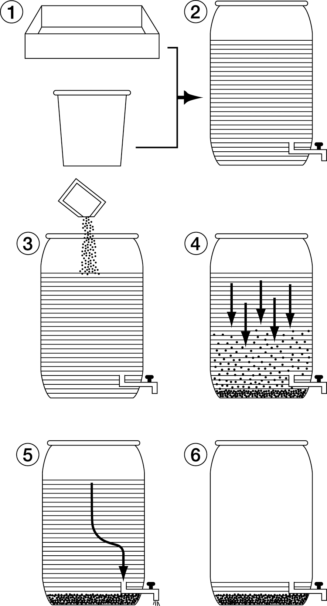

HET COLLEGE VOOR DE TOELATING VAN BESTRIJDINGSMIDDELEN
BIJLAGE I bij het toelatingsbesluit van het middel Chrysal AVB
toelatingsnummer 12617 N
A.
WETTELIJK GEBRUIKSVOORSCHRIFT
Toegestaan is uitsluitend het gebruik als voorbehandelingsmiddel voor ethyleengevoelige snijbloemen na de oogst. De behandeling moet zodanig uitgevoerd worden dat het product niet op of in de grond of in oppervlakte- en afvalwatersystemen terecht kan komen. Alle overtollige oplossingen met het product dienen te worden behandeld volgens de instructie terugwinning van zilver.
Direct nadat de behandeling is beëindigd dienen de snijbloemen op vers water te worden overgezet alvorens er andere handelingen met de snijbloemen worden uitgevoerd.
B.
GEBRUIKSAANWIJZING
Algemeen
Chrysal AVB kan gebruikt worden als voorbehandelingsmiddel voor ethyleengevoelige snijbloemen (b.v. Aconitum, Agapanthus, Alstroemeria, Asclepias, Delphinium, Dendrobium, Dianthus, Euphorbia, Freesia, Gypsophila, Lathyrus, Lilium, Phlox, Veronica) na de oogst om de kwaliteit te verbeteren. Het positieve effect kan, afhankelijk van de bloemsoort, tot uiting komen in:
een verbeterde bloemhoudbaarheid
een verminderd bloem-, blad- en knopval
een verbeterde bloemknopopening
Toepassing
Na het snijden moeten bloemen bij voorkeur direct (eventueel na gekoelde, droge bewaring of transport) op conditioneringoplossing met Chrysal AVB gezet worden overeenkomstig de hiernavolgende dosering:
|
Bloemsoort |
Behandelingsduur (minimum-maximum) [uur] |
Dosering Chrysal AVB [ml/liter] |
|
Alstroemeria en Euphorbia |
4-48 |
1.0 |
|
Lelie |
4-36 |
2.0 |
|
Alle overige ethyleengevoelige bloemen |
4-72 |
2.0 |
Voor Alstroemeria en Euphorbia dient de dosering gehalveerd te worden om enig risico op fytotoxiciteit te vermijden. De maximale behandelingsduur van 36, 48 of 72 uur is ook bedoeld om bloemschade door overmatige zilveropname te voorkomen. Deze maximale behandelingsduur dient eventueel verlaagd te worden bij gewassen met een hoge wateropname of onder condities die een hoge wateropname tot gevolg hebben.
Een gebruiksklare oplossing kan
gedurende maximaal een week gebruikt worden. Tekenen van veroudering
van de oplossing zijn zwartverkleuring en bacteriegroei.
Oude
oplossing moet niet gemengd worden met verse oplossing. Het zilver in
een oude oplossing moet neergeslagen en gerecycled worden (zie
hiernavolgende instructie voor terugwinning van zilver).
Het product moet bewaard worden op een koele, donkere plaats. Voor gebruik schudden. Gebruiksklare oplossing niet in metalen containers gebruiken.
Voorkom lozing van zilver in het milieu. Raadpleeg instructie voor terugwinning van zilver. Of anders, alle restanten die Chrysal AVB bevatten als gevaarlijk afval afvoeren.
Aanbevelingen
Voor bloemen die gevoelig zijn voor bladvergeling (bv. Alstroemeria, Euphorbia fulgens, Lilium) kan Chrysal AVB gecombineerd worden met een middel op basis van gibberelline of een ander daartoe geschikt middel. Deze middelen moeten volgens de instructies op hun etiketten gebruikt worden.
Instructie voor terugwinning van zilver.
Overtollige oplossingen met CHRYSAL AVB, spoelwater en het water in transportbakken (fusten) moeten behandeld worden, zodat het zilver niet in het milieu terecht kan komen. Behandeling moet geschieden door gebruik te maken van het bijgesloten neutralisatiemiddel volgens onderstaande procedure:
Doe de restanten in een speciaal
voor dit proces gebruikte container
(zie afbeeldingen 1 en 2).
Essentieel is dat de aftapkraan en
afvoer zodanig zijn gepositioneerd dat de inhoud van het vat zonder verstoring van het neerslag (= zilver) kan worden afgevoerd.
Voeg aan de oplossing het
neutralisatiemiddel toe. 1 Zakje (5g)
is goed voor 200l. Goed roeren totdat het neutralisatiemiddel goed is opgelost. (zie afbeelding 3).
Laat de oplossing met het
neutralisatiemiddel reageren
gedurende 120 uur.
Een grijs-zwart neerslag zal op de
bodem worden gevormd
(zie afbeelding 4).
De bovenstaande hoeveelheid
water alleen lozen in het riool met
een aansluiting op een RWZI
(zie afbeelding 5).
Het gevormde neerslag en
het resterende water met de
container afvoeren als chemisch
afval (zie afbeelding 6).

NB: Indien deze procedure niet kan worden nageleefd, dienen de oplossingen met Chrysal AVB in z’n geheel te worden afgevoerd als chemisch afval.
Wageningen, 24 december 2004
HET COLLEGE VOOR DE TOELATING
VAN BESTRIJDINGSMIDDELEN,
(voorzitter)
12617 N